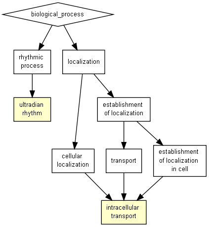

| > 10-3 | 10-3 to 10-5 | 10-5 to 10-7 | 10-7 to 10-9 | < 10-9 |

| GO term | Description | P-value | FDR q-value | Enrichment (N, B, n, b) | Genes |
| GO:0007624 | ultradian rhythm | 1.77E-4 | 1E0 | 74.89 (15353,2,205,2) |
[+] Show genes |
| GO:0046907 | intracellular transport | 3.88E-4 | 1E0 | 1.90 (15353,1221,205,31) |
[+] Show genes |
Species used: Homo sapiens
The system has recognized 15936 genes out of 16698 gene terms entered by the user.
15936 genes were recognized by gene symbol and 0 genes by other gene IDs .
215 duplicate genes were removed (keeping the highest ranking instance of each gene) leaving a total of 15721 genes.
Only 15353 of these genes are associated with a GO term.
The GOrilla database is periodically updated using the GO database and other sources.
The GOrilla database was last updated on Mar 6, 2021
This results page will be available on this site for one month from now (until Jan 26, 2023 ). You can bookmark this page and come back to it later.